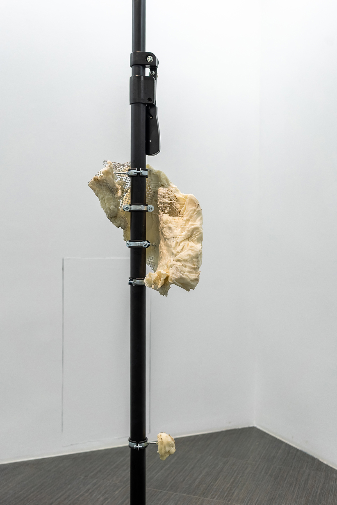
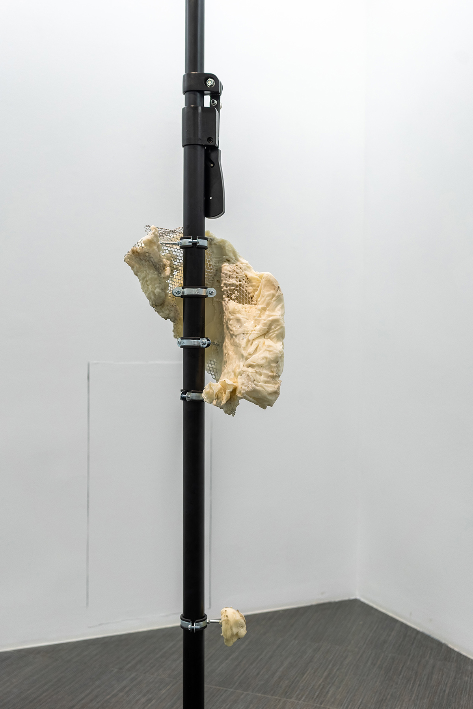
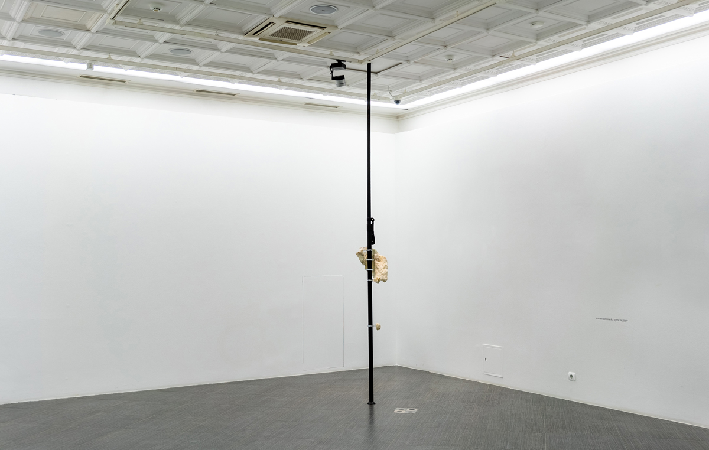
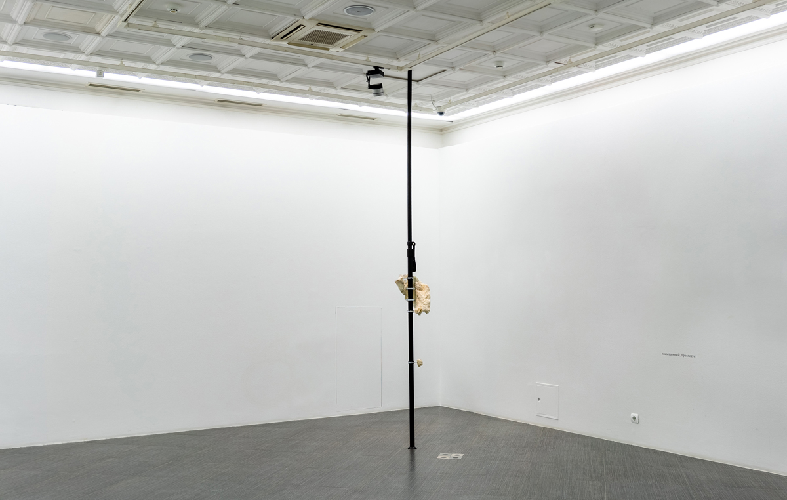
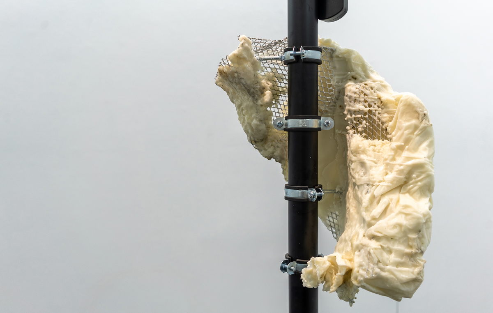
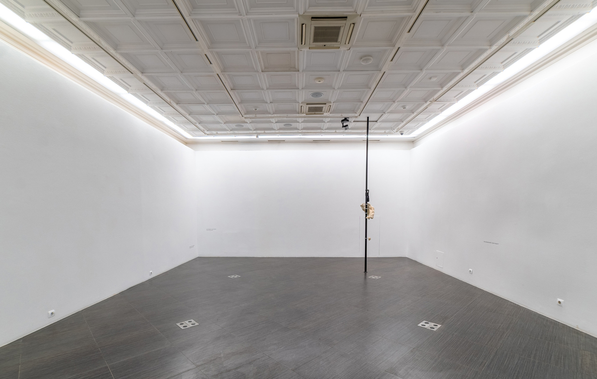
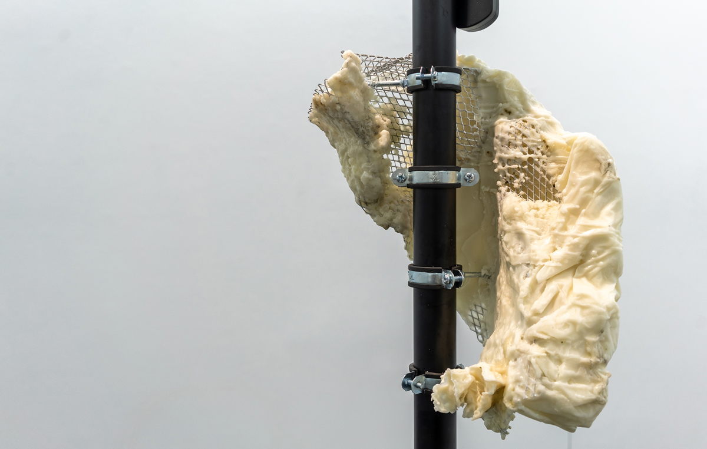
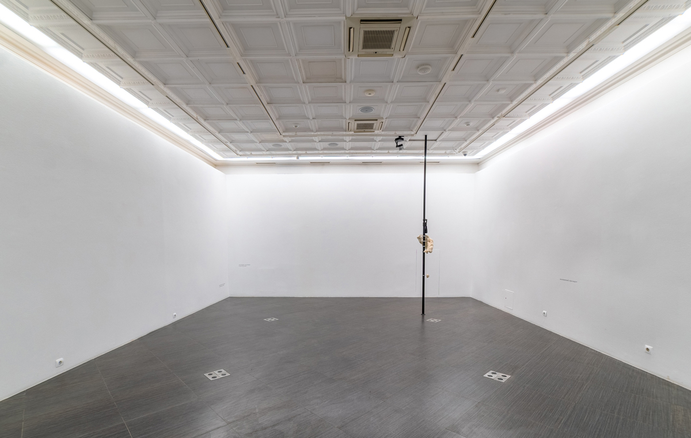
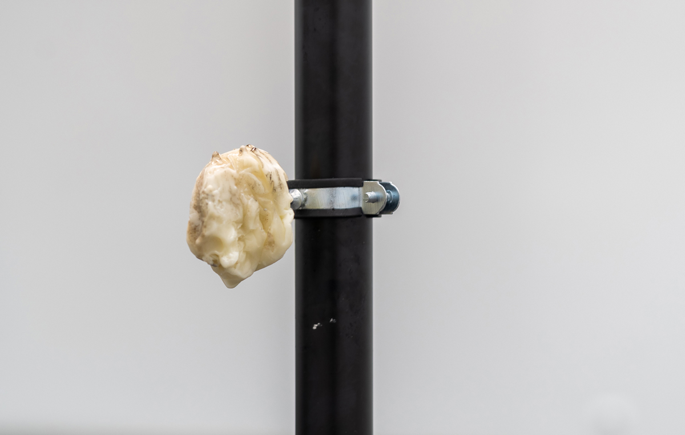
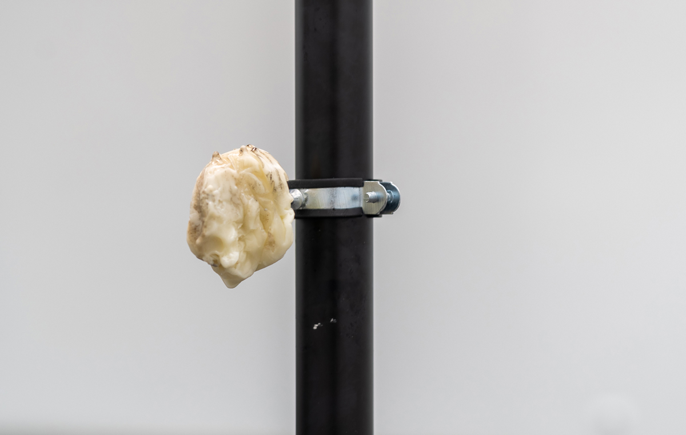

between the branches, a couple of steps forward, 2021
Installation (spacer, wax, scent, text)
artist: Viktoriia Shakhnovich (@bettercallvik)
photographer: Vasiliy Sumin (@vasiliy.sumin)
location: Ekaterina Cultural Foundation, Moscow, Russia (@ekaterina_foundation)
exhibition: “Limiting visibility” 09.06-27.06.2021
Whether printed or digital, this text will not allow the smell, the main agent of Victoria Shakhnovich’s project, to penetrate through its strict ranks. Its presence beside those reading about (NB not those visiting) the installation is possible only by contraband: through the smell of the catalogue ink, the smells of food or drinks being prepared, of ironing or washing clothes — everything that makes up the specific landscape of smells (the smellscape) of the person at the moment of reading this text. Smell is something unthinkable for the Western European tradition. Thinking comes from sight (the light of reason), hearing (the call of Being), but not from the sense of smell. In an effort to hear the call of Being, we never tried to hear its ‘spirit’. Our logos has been disinfected and deodorised many times, it was hygienic even before hygiene was discovered. The ‘Between the branches, a couple of steps forward’ project tries to draw our attention to the inevitable significance and audibility of the smell. For this it examines the ‘loudest’ odoriferous phenomenon — the miasma (Greek, ‘filth’). Today the word miasma usually refers to a very unpleasant odour, but until the 19th century it served as a kind of ontological boundary that separated health from disease, the living from the dead. In contrast to a holistic and self-contained life, death seems fluid and contagious. If a dead thing presents a radical odour, an all-pervading atmospheric phenomenon, then a living thing within its boundaries is a total olfactory organ, through the various pores of which miasmatic vapours are able to penetrate. As a result, survival and preservation of life means closing all the pores and losing the sense of smell, blocking any access the miasma may have to your body. The installation presents a situation in which these two components, the deodorised living and the miasmatic dead, collide within the framework of an episode from the courtier P. A. Tolstoy’s travels across Europe in the late 17th century. Defending himself from the all-consuming embrace of mortal odours, P. A. Tolstoy turns to tobacco for salvation. The odour of tobacco is more of an anti-odour since it ‘prevents’ the sense of smell and ‘drives away’ the dangerous stench. This contrast of odour and anti-odour is shown through the use of different mediums. If the miasma is concentrated in an abstract sculpture with an invisible aromatic border, then the vapour of the tobacco smell settles in the form of text. Existing in the form of a record, the tobacco smell simultaneously embodies the deodorising power of the logos, which tries with all its might to protect itself in a struggle against the forces of the miasma, which are unthinkable, invisible, unimaginable, but have a distinctly audible smell. What role does the visitor have in this confrontation? Obviously he will not be able to take the position of P. A. Tolstoy, who remains forever in the past. On the contrary, able only to read a description of the protective tobacco vapours, he will be unarmed when faced by the cloud of miasma that envelops him. You can retreat and leave the premises, isolating yourself from this tragedy of the logos. But perhaps it is worth opening up to the miasma and finally catching the ‘spirit’ of Being?
Nikita Sazonov


 



 


 




 
